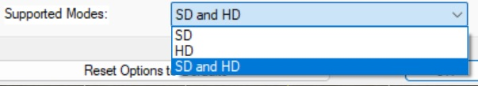

World of Warcraft Reforged is a multiplayer Open World Roleplay-Game custom map for the real time strategy game Warcraft III: Reforged.
It is based on the popular older custom map World of Warcraft Reborn by DeMoNiKuS and originally made by EvilPitlord.
There have been multiple remakes of World of Warcraft Reborn, the other most famous one being WoW Reanimated by Huntsman.
This map is another remake of World of Warcraft Reborn with different content and different features, as well as Computer AI support.
The player can choose a game mode, a hero, a profession and if you are a Warlord you also choose a race and start the game.
Hence, the map combines RPG and RTS play styles in a unique way.
It is an open world map where you can pretty much do whatever you want:
Level and skill your heroes.
Build bases.
Complete quests.
Kill units and bosses.
Attack or ally other players.
Loot items.
Play with and against Computer AI.
The hero level defines what game features are available for you.
You will get more interesting and powerful features with a higher hero level like in almost any other RPG.
See Hero Journey for more information.
VIP players have more features unlocked from the beginning of the game.
The cheat "-unlock" allows you to unlock everything.
Info Quests
The map contains info quests with detailed information about the gameplay.
These info quests can be found in the quest log (F9) during the game.
Clans to play together with multiple players for a common goal.
Achievements which can be unlocked during the game.
Evolution: A research to improve all units which automatically makes creeps stronger with higher hero levels.
Cinematics improving the story and atmosphere.
Becoming a powerful demigod.
RPG-style third person camera with keyboard controls.
Hidden dungeons and other locations to be discovered sometimes defended by creeps and bosses.
A train moving around Azeroth and stopping at stations.
Stats, game type and time shown in a multiboard.
Navy, large sea areas and Computer player support for ships.
Enable HD Graphics
This is not required anymore since version 3.11.
Open the map in the World Editor and go to "Scenario -> Map Options" and select for "Supported Modes:" (at the bottom) "HD and SD":

Make sure that the JassHelper is enabled when saving the map. Go to the "Trigger Editor" and click on "JassHelper" and enable it: